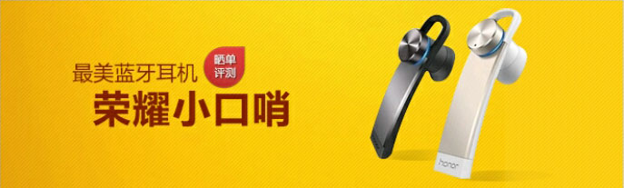

-
［评测分享］最美蓝牙耳机－荣耀小口哨今年6月30日，在备受瞩目的2015荣耀新品发布会上，除了发布大家期待已久的荣耀新旗舰－－荣耀7之外，还发布了最美蓝牙耳机－－荣耀小口哨
流浪男 2015/7/16 20:00 118
-
［花粉随拍］恬静的小溪
 等到风景都看透，也许、你、会陪着我看细水长流倾听消息浅唱、丝绸般透着亮，泛着光。淡定从容，从大石两侧穿过
等到风景都看透，也许、你、会陪着我看细水长流倾听消息浅唱、丝绸般透着亮，泛着光。淡定从容，从大石两侧穿过流浪男 2015/7/16 20:00 118
-
［有点不同］荣耀7线下首销火爆四城2015年7月11日，因为荣耀7注定是一个有点不同的日子！因为荣耀7全国线下首销活动在北京、南京、郑州和成都四大城市
流浪男 2015/7/16 20:00 118